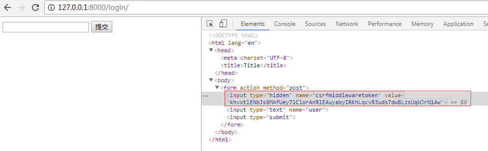

文件在view_demo
一个视图函数简称视图，是一个简单的Python 函数，它接受Web请求并且返回Web响应。响应可以是一张网页的HTML内容，一个重定向，一个404错误，一个XML文档，或者一张图片. . . 是任何东西都可以。无论视图本身包含什么逻辑，都要返回响应。代码写在哪里也无所谓，只要它在你的Python目录下面。除此之外没有更多的要求了——可以说“没有什么神奇的地方”。为了将代码放在某处，约定是将视图放置在项目或应用程序目录中的名为views.py的文件中。
视图层，熟练掌握两个对象即可：请求对象(request)和响应对象(HttpResponse)
视图层之请求对象
http://127.0.0.1:8000/index/?name=simon&age=18
url:协议：//IP:port//路径?get请求数据属性
view_demo/urls
from django.contrib import admin
from django.urls import path, re_path
from app01 import views
urlpatterns = [
path('admin/', admin.site.urls),
re_path(r"index/", views.index), #index(request)
re_path(r"^$", views.index) #跟上边对应的视图函数一样，可以直接ip+端口访问，不需路径；这样匹配到的路径为跟路径
]
views
from django.shortcuts import render
# Create your views here.
from django.shortcuts import HttpResponse
def index(request):
print("method", request.method) #告诉你这是次GET请求；index提交form表单就变成post请求了
print(request.GET)
#print(request.GET("name"))
print(request.POST)
print(request.path) #只能拿到路径
print(request.get_full_path()) #既可以拿到数据，又可以拿到路径
return render(request, "index.html")index
<!DOCTYPE html>
<html lang="en">
<head>
<meta charset="UTF-8">
<title>Title</title>
</head>
<body> #不加下面着重颜色的这个它还是get请求
<form action="" method="post"> {#action里边可以加http://127.0.0.1:8000/index/也可以加index/都是默认会生成，如果都不写它会当前form表单所在的url拿到#}
姓名<input type="text" name="name">
年龄<input type="text" name="age">
<input type="submit">
</form>
</body>
</html> http://127.0.0.1 :8000/index/?name=simon&age=27
url 协议（即http）://IP：port/路径?get请求数据（参数） ;端口号和?前面的就是路径，后边的name=simon&age=27是参数请求数据
method GET
<QueryDict: {'a': ['1']}> #get取到的数据
<QueryDict: {}> #post取到的数据
/index/
/index/?a=1 #路径
[26/May/2018 15:16:08] "GET /index/?a=1 HTTP/1.1" 200 292[12/Aug/2018 18:56:46] "GET /index//?name=simon&age=27 HTTP/1.1" 200 320
method GET
<QueryDict: {'name': ['simon'], 'age': ['27']}>
<QueryDict: {}>
/index/
/index/?name=simon&age=27
[12/Aug/2018 18:57:18] "GET /index/?name=simon&age=27 HTTP/1.1" 200 320
method POST #提交form表单的时候，但是路径没有变化
<QueryDict: {'name': ['simon'], 'age': ['27']}> #GET
<QueryDict: {'name': ['alex'], 'age': ['18']}> #POST
/index/ #拿到路径path
/index/?name=simon&age=27 #既可以打印路径也可以打印数据 get_full_path()
[12/Aug/2018 18:57:46] "POST /index/?name=simon&age=27 HTTP/1.1" 200 320django将请求报文中的请求行、首部信息、内容主体封装成 HttpRequest 类中的属性。 除了特殊说明的之外，其他均为只读的。
/*
1.HttpRequest.GET
一个类似于字典的对象，包含 HTTP GET 的所有参数。详情请参考 QueryDict 对象。
2.HttpRequest.POST
一个类似于字典的对象，如果请求中包含表单数据，则将这些数据封装成 QueryDict 对象。
POST 请求可以带有空的 POST 字典 —— 如果通过 HTTP POST 方法发送一个表单，但是表单中没有任何的数据，QueryDict 对象依然会被创建。
因此，不应该使用 if request.POST 来检查使用的是否是POST 方法；应该使用 if request.method == "POST"
另外：如果使用 POST 上传文件的话，文件信息将包含在 FILES 属性中。
注意：键值对的值是多个的时候,比如checkbox类型的input标签，select标签，需要用：
request.POST.getlist("hobby")
3.HttpRequest.body
一个字符串，代表请求报文的主体。在处理非 HTTP 形式的报文时非常有用，例如：二进制图片、XML,Json等。
但是，如果要处理表单数据的时候，推荐还是使用 HttpRequest.POST 。
4.HttpRequest.path
一个字符串，表示请求的路径组件（不含域名）。
例如："/music/bands/the_beatles/"
5.HttpRequest.method
一个字符串，表示请求使用的HTTP 方法。必须使用大写。
例如："GET"、"POST"
6.HttpRequest.encoding
一个字符串，表示提交的数据的编码方式（如果为 None 则表示使用 DEFAULT_CHARSET 的设置，默认为 'utf-8'）。
这个属性是可写的，你可以修改它来修改访问表单数据使用的编码。
接下来对属性的任何访问（例如从 GET 或 POST 中读取数据）将使用新的 encoding 值。
如果你知道表单数据的编码不是 DEFAULT_CHARSET ，则使用它。
7.HttpRequest.META
一个标准的Python 字典，包含所有的HTTP 首部。具体的头部信息取决于客户端和服务器，下面是一些示例：
CONTENT_LENGTH —— 请求的正文的长度（是一个字符串）。
CONTENT_TYPE —— 请求的正文的MIME 类型。
HTTP_ACCEPT —— 响应可接收的Content-Type。
HTTP_ACCEPT_ENCODING —— 响应可接收的编码。
HTTP_ACCEPT_LANGUAGE —— 响应可接收的语言。
HTTP_HOST —— 客服端发送的HTTP Host 头部。
HTTP_REFERER —— Referring 页面。
HTTP_USER_AGENT —— 客户端的user-agent 字符串。
QUERY_STRING —— 单个字符串形式的查询字符串（未解析过的形式）。
REMOTE_ADDR —— 客户端的IP 地址。
REMOTE_HOST —— 客户端的主机名。
REMOTE_USER —— 服务器认证后的用户。
REQUEST_METHOD —— 一个字符串，例如"GET" 或"POST"。
SERVER_NAME —— 服务器的主机名。
SERVER_PORT —— 服务器的端口（是一个字符串）。
从上面可以看到，除 CONTENT_LENGTH 和 CONTENT_TYPE 之外，请求中的任何 HTTP 首部转换为 META 的键时，
都会将所有字母大写并将连接符替换为下划线最后加上 HTTP_ 前缀。
所以，一个叫做 X-Bender 的头部将转换成 META 中的 HTTP_X_BENDER 键。
8.HttpRequest.FILES
一个类似于字典的对象，包含所有的上传文件信息。
FILES 中的每个键为<input type="file" name="" /> 中的name，值则为对应的数据。
注意，FILES 只有在请求的方法为POST 且提交的<form> 带有enctype="multipart/form-data" 的情况下才会
包含数据。否则，FILES 将为一个空的类似于字典的对象。
9.HttpRequest.COOKIES
一个标准的Python 字典，包含所有的cookie。键和值都为字符串。
10.HttpRequest.session
一个既可读又可写的类似于字典的对象，表示当前的会话。只有当Django 启用会话的支持时才可用。
完整的细节参见会话的文档。
11.HttpRequest.user(用户认证组件下使用)
一个 AUTH_USER_MODEL 类型的对象，表示当前登录的用户。
如果用户当前没有登录，user 将设置为 django.contrib.auth.models.AnonymousUser 的一个实例。你可以通过 is_authenticated() 区分它们。
例如：
if request.user.is_authenticated():
# Do something for logged-in users.
else:
# Do something for anonymous users.
user 只有当Django 启用 AuthenticationMiddleware 中间件时才可用。
-------------------------------------------------------------------------------------
匿名用户
class models.AnonymousUser
django.contrib.auth.models.AnonymousUser 类实现了django.contrib.auth.models.User 接口，但具有下面几个不同点：
id 永远为None。
username 永远为空字符串。
get_username() 永远返回空字符串。
is_staff 和 is_superuser 永远为False。
is_active 永远为 False。
groups 和 user_permissions 永远为空。
is_anonymous() 返回True 而不是False。
is_authenticated() 返回False 而不是True。
set_password()、check_password()、save() 和delete() 引发 NotImplementedError。
New in Django 1.8:
新增 AnonymousUser.get_username() 以更好地模拟 django.contrib.auth.models.User。
*//*
1.HttpRequest.get_full_path()
返回 path，如果可以将加上查询字符串。
例如："/music/bands/the_beatles/?print=true"
2.HttpRequest.is_ajax()
如果请求是通过XMLHttpRequest 发起的，则返回True，方法是检查 HTTP_X_REQUESTED_WITH 相应的首部是否是字符串'XMLHttpRequest'。
大部分现代的 JavaScript 库都会发送这个头部。如果你编写自己的 XMLHttpRequest 调用（在浏览器端），你必须手工设置这个值来让 is_ajax() 可以工作。
如果一个响应需要根据请求是否是通过AJAX 发起的，并且你正在使用某种形式的缓存例如Django 的 cache middleware，
你应该使用 vary_on_headers('HTTP_X_REQUESTED_WITH') 装饰你的视图以让响应能够正确地缓存。
*/
HttpResponse响应体
views
from django.shortcuts import render
# Create your views here.
from django.shortcuts import HttpResponse
def index(request):
print("method", request.method) #告诉你这是次GET请求
print(request.GET)
#print(request.GET("name"))
print(request.POST)
print(request.path) #只能拿到路径
print(request.get_full_path()) #既可以拿到数据，又可以拿到路径
#return HttpResponse("<h1>ok</h1>") #HttpResponse就是一个响应体的意思；返回一个字符串；本质返回的就是一个HttpResponse
import time
ctime = time.time() #怎么把这个变量放到页面呢？
return render(request, "index.html",{"timer":ctime})#index.html是模板文件；从数据库取出来的参数、变量怎么放在模板Html里边呢，这就涉及到render第三个参数了
#render渲染的时候把模板文件按照模板语法进行渲染成一个html文件发给浏览器（含有模板语法的html文件不再是Html文件了，而是叫模板文件了。）<!DOCTYPE html>
<html lang="en">
<head>
<meta charset="UTF-8">
<title>Title</title>
</head>
<body>
<form action="" method="post"> {#action里边可以加http://127.0.0.1:8000/index/也可以加index/都是默认会生成#}
姓名<input type="text" name="name">
年龄<input type="text" name="age">
<input type="submit">
</form>
<p>{{ timer }}</p> {#模板语法，模板文件;#}
</body>
</html>views.py
from django.shortcuts import render
# Create your views here.
def index(request):
'''模板语法只有2个：
渲染变量：{{}} 1.深度查询--->>句点符；2.过滤器
渲染标签：{% %}
:param request:
:return:
'''
name = "simon"
i = 10 #整型
l = [1,2,3] #列表
info = {"name":"simon", "age":22} #字典
b = True #布尔
class Person(object):
def __init__(self, name, age):
self.name = name
self.age = age
alex = Person("alex",33) #对象
egon = Person("egon",38)
person_list = [alex, egon]
#return render(request, "index.html", {"name":name})
return render(request, "index.html", locals()) #locals是局部变量的意思,这样就不用一个个去对应了;它会把这些局部变量直接传给模板，它传的时候就是按照{“name”:name} {"alex":alex}这种方式传的
index.py
<!DOCTYPE html>
<html lang="en">
<head>
<meta charset="UTF-8">
<title>Title</title>
</head>
<body>
<h1>index</h1>
<p>{{ name }}</p>
<p>{{ i }}</p>
<p>{{ info }}</p>
<p>{{ l }}</p>
<p>{{ alex }}</p>
<p>{{ person_list }}</p>
<p>{{ b }}</p>
<hr>
深度查询 是用 . 完成的
<p>{{ l.1 }}</p> #我想要第2个元素
<p>{{ info.name }}</p> #字典下的name那个键
<p>{{ alex.age }}</p> #alex这个变量对象
<p>{{ person_list.1.age }}</p> #person_list中第二个人的年龄
</body>
</html>{{obj|filter__name:param}}
default
如果一个变量是false或者为空，使用给定的默认值。否则，使用变量的值。例如：{{ value|default:"nothing" }}
length
返回值的长度。它对字符串和列表都起作用。例如：{{ value|length }}
如果 value 是 ['a', 'b', 'c', 'd']，那么输出是 4。
filesizeformat
将值格式化为一个 “人类可读的” 文件尺寸 （例如 '13 KB', '4.1 MB', '102 bytes', 等等）。例如：{{ value|filesizeformat }}
如果 value 是 123456789，输出将会是 117.7 MB。
date
如果 value=datetime.datetime.now(){{ value|date:"Y-m-d" }}
slice
如果 value="hello world" {{ value|slice:"2:-1" }}
truncatechars
如果字符串字符多于指定的字符数量，那么会被截断。截断的字符串将以可翻译的省略号序列（“...”）结尾。
参数：要截断的字符数。例如：
{{ value|truncatechars:9 }}
safe
Django的模板中会对HTML标签和JS等语法标签进行自动转义，原因显而易见，这样是为了安全。但是有的时候我们可能不希望这些HTML元素被转义，比如我们做一个内容管理系统，后台添加的文章中是经过修饰的，这些修饰可能是通过一个类似于FCKeditor编辑加注了HTML修饰符的文本，如果自动转义的话显示的就是保护HTML标签的源文件。为了在Django中关闭HTML的自动转义有两种方式，如果是一个单独的变量我们可以通过过滤器“|safe”的方式告诉Django这段代码是安全的不必转义。比如：
value="<a href="">点击</a>" {{ value|safe}}
这里简单介绍一些常用的模板的过滤器
https://yiyibooks.cn/translate/django_182/ref/templates/builtins.html#ref-templates-builtins-tags
views
from django.shortcuts import render
# Create your views here.
def index(request):
'''模板语法：
变量：{{}} 1.深度查询 句点符；2.过滤器
标签：{% %}
:param request:
:return:
'''
##########过滤器
import datetime
now = datetime.datetime.now()
file_size = 123456789
text = "hello python hi luffycity go java linux"
link = "<a href=''>click</a>"
#return render(request, "index.html", {"name":name})
return render(request, "index.html", locals()) #locals是局部变量的意思
index.html
<h3>过滤器</h3>
<p>{{ now|date:"Y-m-d" }}</p> #date是它自带的值，只能是这个。now --->>给它替换成 "Y-m-d"
<p>{{ person_list|default:"数据为空" }}</p> #数据为空的时候
<p>{{ file_size|filesizeformat }}</p> #字节大小，78M
<p>{{ text|truncatechars:9 }}</p> {# 按照字节数截断#}
<p>{{ text|truncatewords:3 }}</p> {# 按照单词数截断#}
<p>{{ link|safe }}</p> {# 不加safe，django为了安全性（<script> alert(123)</script>）会把含有特殊字符的符号转义#}
<p>{{ l.0|add:100 }}</p> {# 1+100=101,加法过滤器#}
<p>{{ info.name|upper }}</p> #大写views
from django.shortcuts import render, HttpResponse
# Create your views here.
def index(request):
'''模板语法：
变量：{{}} 1.深度查询 句点符；2.过滤器 {{val|filter_name}}
标签：{% %}
:param request:
:return:
'''
#########标签
user = "alex" #user有值
#return render(request, "index.html", {"name":name})
return render(request, "index.html", locals()) #locals是局部变量的意思
def login(request):
if request.method == "POST":
return HttpResponse("OK")
return render(request, "login.html")index
<!DOCTYPE html>
<html lang="en">
<head>
<meta charset="UTF-8">
<title>Title</title>
</head>
<body>
<h4>for标签</h4>
{% for i in l%}
<p>{{ i }}</p> #循环出列表l里边的 1 2 3
{% endfor %}
{% for i in info %}
<p>{{ i }}</p> #i就是字典里的key
{% endfor %}
{% for person in person_list %}
<p>{{ forloop.counter0 }} {{ person.name }} , {{ person.age }}</p> ##每个人的（前边有个序列号，它必须放到循环里边）名字、年龄
{% empty %} #如果列表为空可以把这个写上，再加个p标签
<p>列表为空</p>
{% endfor %}
#############if标签
{% if user %} #如果user是登录状态
<p>
<a href="">hi {{ user }}</a> {# user变量有值就是登录状态，要渲染的标签 #}
<a href="">注销</a>
</p>
{% else %}
<p>
<a href="">登录</a>
<a href="">注册</a>
</p>
{% endif %}
##############with标签
{% with person_list.1.name as n %} {#进行替换#}
{{ n }}
{{ n }}
{% endwith %}
</body>
</html>login
<!DOCTYPE html>
<html lang="en">
<head>
<meta charset="UTF-8">
<title>Title</title>
</head>
<body>
<form action="" method="post">
{% csrf_token %} {# 第一次发post请求，知道你没这个键值对就可以把你拦截了，一刷新这个页面就有了，#}
{# 再提交时第二次给服务器发post请求，带着这个键值就可以通过；这个值是存储在服务器上的，专门的代码给你拦截做判断的#}
<input type="text" name="user">
<input type="submit">
</form>
</body>
</html>我们加的这个 {% csrf_token %} render方法给渲染成了这个Html页面，在post提交的时候是提交了input两个键值对。以后只要是提交post请求都可以加上去
csrf_token相当于在放了一个input标签（<input type="text" >，值是一个随机字符串）把这个问题给解决了

<input type="hidden" name="csrfmiddlewaretoken" value="khvxtlENbJs6MAfUey7lClorAnRlEAuyabyIRKhLqcvR3uds7dw8LzsUqWJrN1Aw">
在my_tag_filter
from django import template
register = template.Library()
@register.filter #加个装饰器
def multi_fliter(x, y): #自定义过滤器 i代表过滤器前边的渲染变量，y是参数；最大定义2个形参
return x*y
@register.simple_tag() #自定义标签；可以传3个参数，没有参数限制
def multi_tag(x, y, z):
return x*y*zindex里边的部分
<h4>自定义过滤器,标签</h4>
{% load my_tag_filter %} {#把它load引入进来 把你写的文件导入进来#}
<p>{{ i|multi_fliter:20 }}</p> {# i*20 i就是那个x，y是20 ；调用的时候最多传2个参数这就是multi_fliter的局限性#}
<p>{% multi_tag 7 9 2%}</p> {# 自定义一个标签，标签的调用 ；自定义标签没有限制,虽然参数灵活了，但是不能放在if里边进行条件判断，因为它需要加%#}
{% if i|multi_fliter:10 > 100 %} #判断i*10是否大于100，(i=10) 但multi_tag就不能放在if判断里边去了；这两个各有优缺点。
<p>100</p> #是就显示100
{% else %}
<p>{{ i }}</p> #否则就显示i
{% endif %}Django模版引擎中最强大也是最复杂的部分就是模版继承了。模版继承可以让您创建一个基本的“骨架”模版，它包含您站点中的全部元素，并且可以定义能够被子模版覆盖的 blocks
advertise.html（bootstrap面板部分）
<div class="action">
<div class="panel panel-danger">
<div class="panel-heading">Panel heading without title</div>
<div class="panel-body">
Panel content
</div>
</div>
<div class="panel panel-warning">
<div class="panel-heading">Panel heading without title</div>
<div class="panel-body">
Panel content
</div>
</div>
<div class="panel panel-success">
<div class="panel-heading">Panel heading without title</div>
<div class="panel-body">
Panel content
</div>
</div>
</div>模板bases.html（模板页面）
<!DOCTYPE html>
<html lang="en">
<head>
<meta charset="UTF-8">
<!-- <title>Title</title> -->
{% block title %} {#留下Title盒子，等继承者去继承;你写个title,继承者想继承就继承，不想继承就按照父本这样子；可以留多个盒子 #}
<title>base</title>
{% endblock %}
<!-- 最新版本的 Bootstrap 核心 CSS 文件 -->
<link rel="stylesheet" href="https://cdn.bootcss.com/bootstrap/3.3.7/css/bootstrap.min.css" integrity="sha384-BVYiiSIFeK1dGmJRAkycuHAHRg32OmUcww7on3RYdg4Va+PmSTsz/K68vbdEjh4u" crossorigin="anonymous">
<style>
*{
margin:0;
padding: 0;
}
.header{
width:100%;
height: 50px;
background-color: #369;
}
</style>
</head>
<body>
<div class="header"></div>
<div class="container">
<div class="row">
<div class="col-md-3">
{% include 'advertise.html' %}
</div>
<div class="col-md-9">
{% block con %} ##里边加一个可扩展的盒子，留给继承者去扩展这个盒子，你可以自己去写这一部分;如果你扩写了就覆盖了这个盒子，用你自己的，没有就用这个了哦
<h1>content</h1>
{% endblock %}
</div>
</div>
</div>
</body>
</html>这个模版，我们把它叫作 base.html， 它定义了一个简单HTML骨架。“子模版”的工作是用它们的内容填充空的blocks。
在这个例子中， block 标签定义了2个可以被子模版内容填充的block。 block 告诉模版引擎： 子模版可能会覆盖掉模版中的这些位置。
子模版可能看起来是这样的：
index
{% extends 'base.html' %} {#先继承base，必须写在首行，不然它不知道block是什么意思 跟include不一样，它有它自己独特的优势#}
{% block title %}
<title>index</title>
{% endblock %}
{% block con %} {#base里边col-md-9里边没有内容，它只留了一个盒子 #}
<h1>index</h1>
<p>{{ name }}</p>
<p>{{ i }}</p>
<p>{{ info }}</p>
<p>{{ l }}</p>
<p>{{ alex }}</p>
<p>{{ person_list }}</p>
<p>{{ b }}</p>
<hr>
深度查询
<p>{{ l.1 }}</p>
<p>{{ info.name }}</p>
<p>{{ alex.age }}</p>
<p>{{ person_list.1.age }}</p>
<h3>过滤器</h3>
<p>{{ now|date:"Y-m-d" }}</p>
<p>{{ person_list|default:"数据为空" }}</p>
<p>{{ file_size|filesizeformat }}</p>
<p>{{ text|truncatechars:9 }}</p> {# 按照字节数#}
<p>{{ text|truncatewords:3 }}</p> {# 按照单词数#}
<p>{{ link|safe }}</p> {# 不加safe，django为了安全性会把含有特殊字符的符号转义#}
<p>{{ l.0|add:100 }}</p> {# 1+100=101#}
<p>{{ info.name|upper }}</p>
<hr>
<h4>for标签</h4>
{% for i in l%}
<p>{{ i }}</p>
{% endfor %}
{% for i in info %}
<p>{{ i }}</p>
{% endfor %}
{% for person in person_list %}
<p>{{ forloop.counter0 }} {{ person.name }} , {{ person.age }}</p>
{% empty %}
<p>列表为空</p>
{% endfor %}
{% if user %}
<p>
<a href="">hi {{ user }}</a> {# user变量有值就是登录状态，要渲染的标签#}
<a href="">注销</a>
</p>
{% else %}
<p>
<a href="">登录</a>
<a href="">注册</a>
</p>
{% endif %}
{% with person_list.1.name as n %} {#进行替换#}
{{ n }}
{{ n }}
{% endwith %}
<hr>
<h4>自定义过滤器,标签</h4>
{% load my_tag_filter %} {# 把你写的文件导入进来#}
<p>{{ i|multi_fliter:20 }}</p> {# i*20 ；调用的时候最多传2个参数这就是multi_fliter的局限性#}
<p>{% multi_tag 7 9 2%}</p> {# 自定义一个标签，标签的调用 ；自定义标签没有限制,虽然参数灵活了，但是不能放在if里边进行条件判断，因为它需要加%#}
{% if i|multi_fliter:10 > 100 %}
<p>100</p>
{% else %}
<p>{{ i }}</p>
{% endif %}
{% endblock %}order
{% extends 'base.html' %}
{% block title %}
<title>orders</title>
{% endblock %}
{% block con %}
{{ block.super}} {#这样就继承了父类，还引用父类里边的内容，又重写了自己#}
<h4>订单</h4>
{% endblock con%} {#可以把名字加上就好区分了，谁对应谁，就是con要和上边的con对应上 #} extends 标签是这里的关键。它告诉模版引擎，这个模版“继承”了另一个模版。当模版系统处理这个模版时，首先，它将定位父模版——在此例中，就是“base.html”。
那时，模版引擎将注意到 base.html 中的2个 block 标签，并用子模版中的内容来替换这些block。
这里是使用继承的一些提示：
如果你在模版中使用 {% extends %} 标签，它必须是模版中的第一个标签。其他的任何情况下，模版继承都将无法工作。
在base模版中设置越多的 {% block %} 标签越好。请记住，子模版不必定义全部父模版中的blocks，所以，你可以在大多数blocks中填充合理的默认内容，然后，只定义你需要的那一个。多一点钩子总比少一点好。
如果你发现你自己在大量的模版中复制内容，那可能意味着你应该把内容移动到父模版中的一个 {% block %} 中。
If you need to get the content of the block from the parent template, the {{ block.super }} variable will do the trick. This is useful if you want to add to the contents of a parent block instead of completely overriding it. Data inserted using {{ block.super }} will not be automatically escaped (see the next section), since it was already escaped, if necessary, in the parent template.
为了更好的可读性，你也可以给你的 {% endblock %} 标签一个 名字 。例如：
{% block content %}
...
{% endblock content %}
在大型模版中，这个方法帮你清楚的看到哪一个 {% block %} 标签被关闭了。
block 标签。